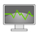

Welcome to my lab!

Introduction
Welcome to the Physics lab! In this lab, we will do virtual experiments to understand Newton's laws of motion. We will start with a simple pendulum, and from then on, the experiments get more interesting.

List of experiments